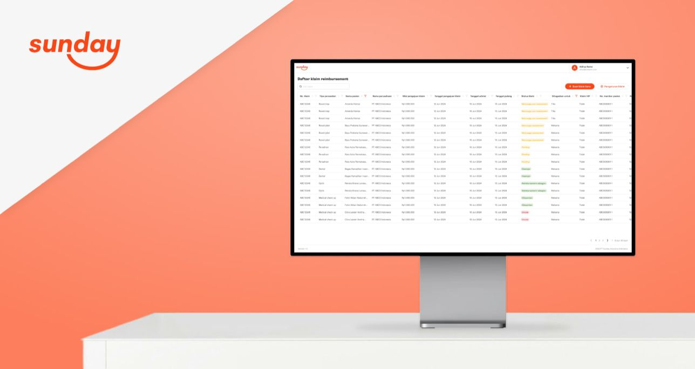
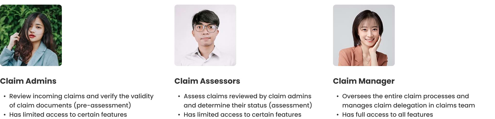
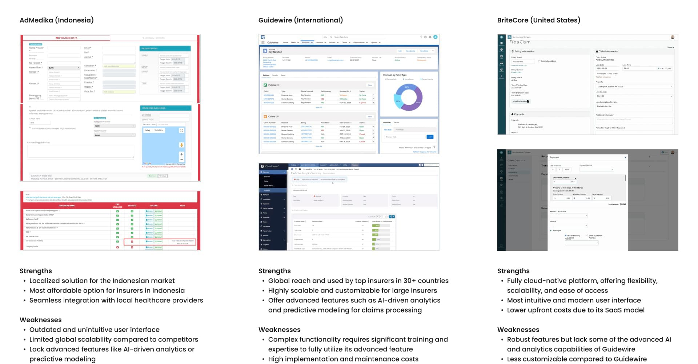
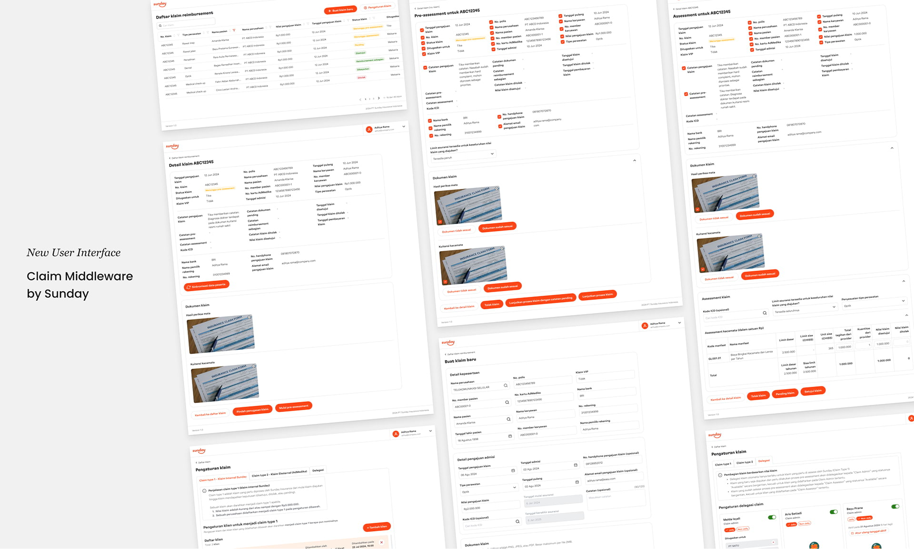
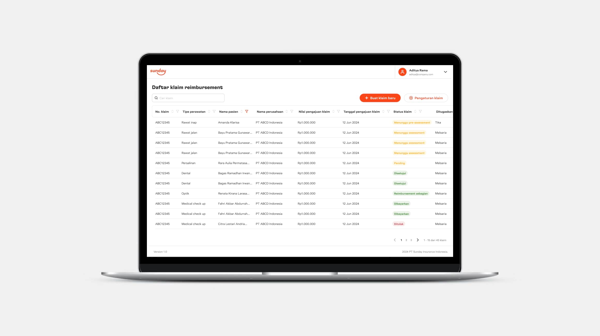
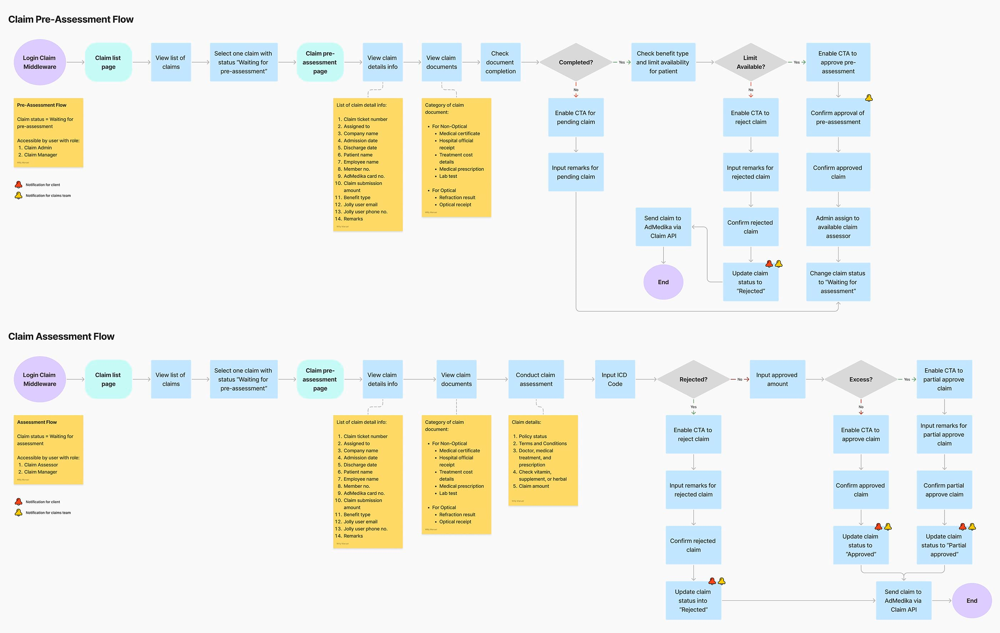
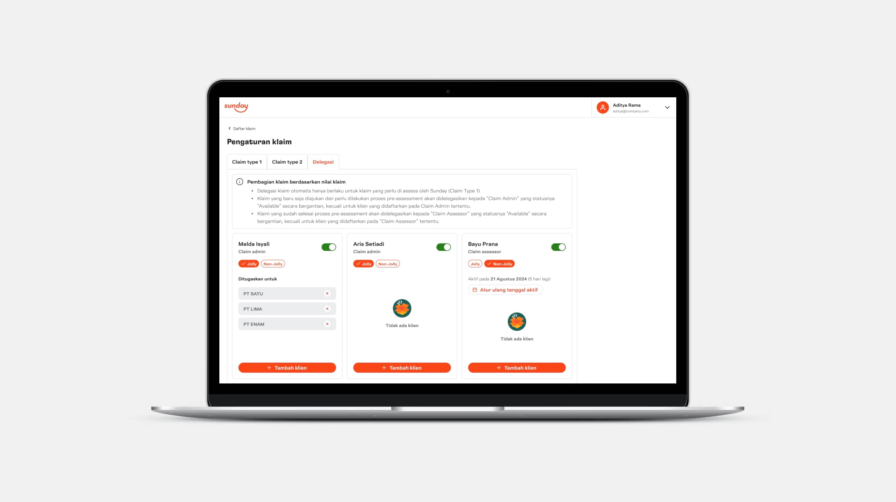
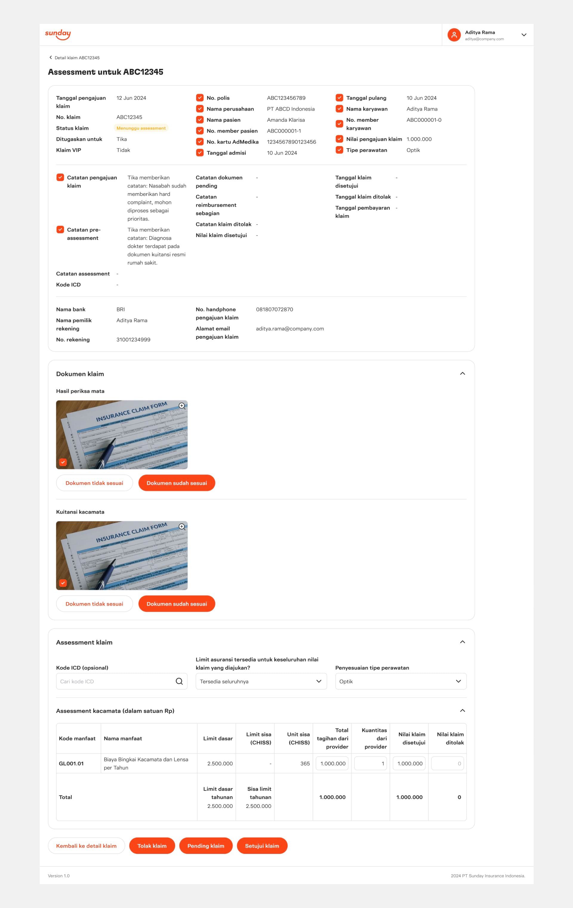

Role
Design Lead — defined the E2E claims workflow architecture, set the design direction, and led UI design for key pages
Claim Middleware is a claims management platform that streamlines the entire claim lifecycle for the Sunday claims team. This project aimed to resolve the inefficiencies of the existing manual insurance claim process. That process involved using multiple spreadsheets and documents to assess incoming claims, track their processing status, and delegate claim assignments. These inefficiencies resulted in longer claim processing times and lower claim processing rates for the team.

Sunday's claims team assessed incoming claims, tracked their status, and assigned work across spreadsheets and separate documents. Limited visibility made it difficult to monitor claim progress and identify bottlenecks, while manual data entry and document transfers increased the risk of errors. Together, these challenges slowed down claim processing, negatively impacting operational efficiency and customer satisfaction.
We identified 3 distinct user roles: Claim Admins, Claim Assessors, and Claim Manager. Each role has its own duties and different levels of access to features on the platform.

We conducted a competitive analysis of leading claims management platforms to identify their strengths, weaknesses, and opportunities for innovation.


Claim Middleware new user interface overviewAfter conducting competitive analysis and mapping out the overall user journey, I wireframed the claim list and claim details with the existing design systems and UI components, so the new screens would stay consistent with the brand and be easier to update.
A claim list with sort and filter on each column, for both optical and non-optical claims. Claim type 1 is processed by Sunday’s claims team on this list. Claim type 2 is passed to AdMedika, a third-party administrator and digital healthcare provider in Indonesia.
AdMedika’s screens as the place the Sunday team processes a type 1 claim.

Claim list page, from where the claims team can view the list of submitted claims, add new claims, and adjust claim settingsMy task was to design the end-to-end claim processing workflows from pre-assessment, assessment, to assessment results from scratch. I also facilitated the team's understanding of these complex workflows by creating detailed, annotated flowcharts to map out the user journey.

Admin pre-assesses. Assessor assesses after that. Manager assigns clients and sets leave access.
Guidewire’s analytics layer and one role finishing the whole claim.

Claim delegation, which was one of the most requested features during the pilot phaseAfter pre-assessment, the assessor works on one page. They mark each document as matching or not, see the benefit lines and the limit, and enter the approved amount and the rejected amount. They then choose reject (Tolak klaim), pending (Pending klaim), or approve (Setujui klaim). The pre-assessment note stays on the page.
A recommended amount and finishing the assessment inside AdMedika. The assessor types both amounts. Type 2 claims are still handed to AdMedika. The decision is made on this screen.

Claim assessment page, which allows Claim Assessors to review claim information, assess claim amount, and decide claim statusManual create for email and WhatsApp. A short status email to the team and the client.
Jolly, Sunday's employee benefit app, as the only way in and treating the status email as a feature of its own.